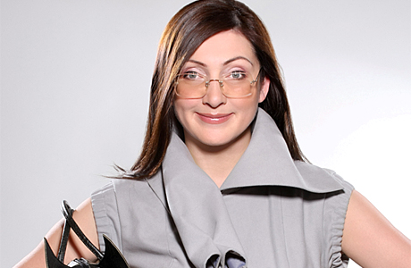
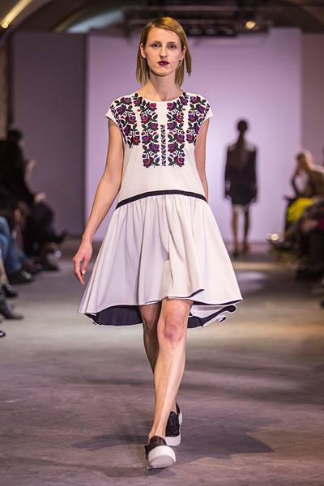
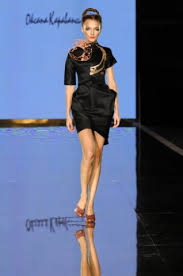
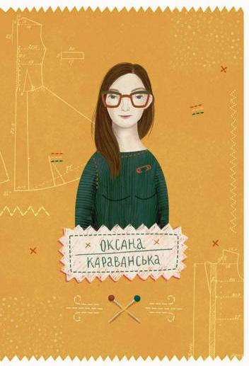

Випускниця Львівської академії мистецтв.
У 1996 стала фіналістом конкурсу Alta-Moda (голова журі П'єр Карден) В 1997 відкрила авторський бутік, перший в Україні
2001 — отримала звання «Найкращий стиліст року» в галузі кліпмейкерства
2002 — Гран Прі «Кришталевий Силует» за найкращу сукню року
"Мода — це коктейль еклектичних вітрів замішаних у шейкері часу"-сказала Оксана Караванська
2015 — «Стильна книжка для панянки» (Львів : Видавництво Старого Лева) в оформленні Анастасії Стефурак.